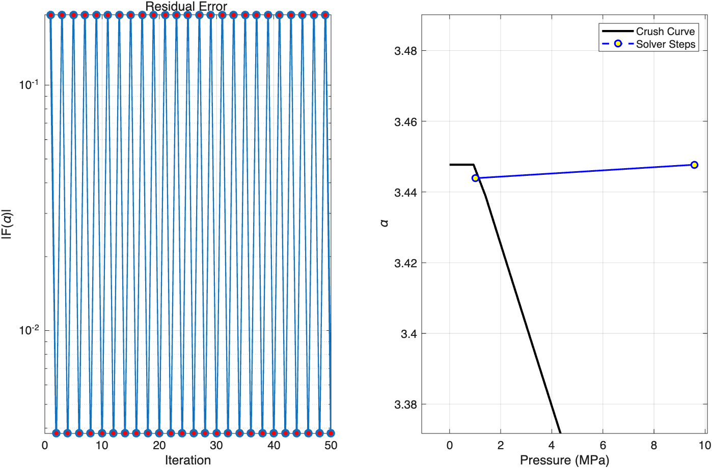
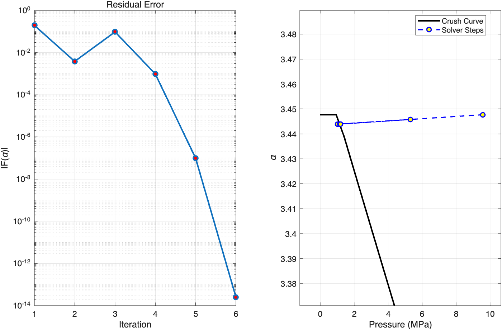
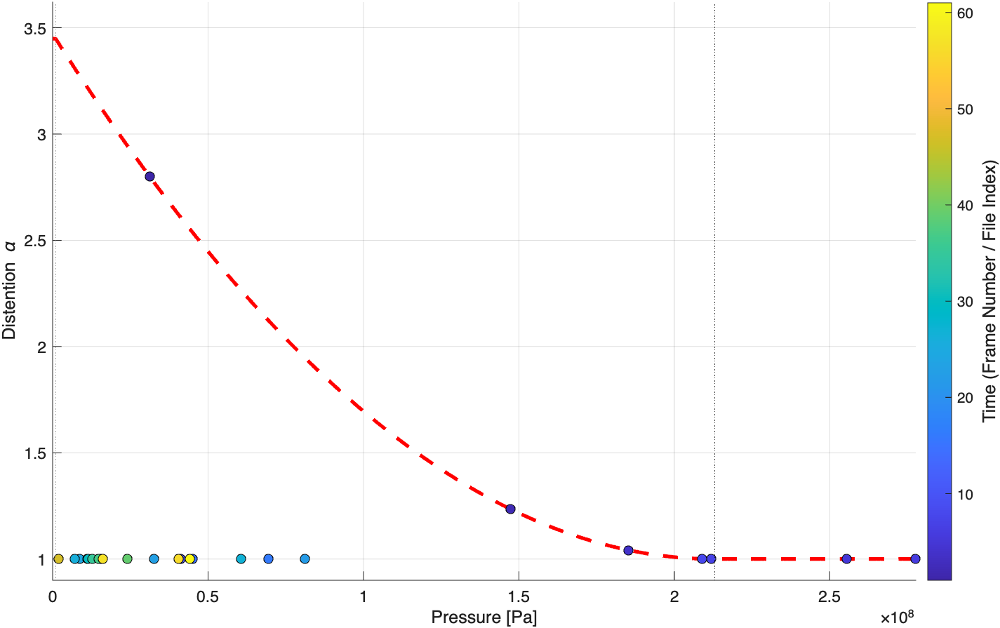
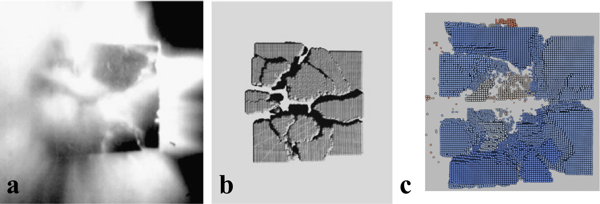
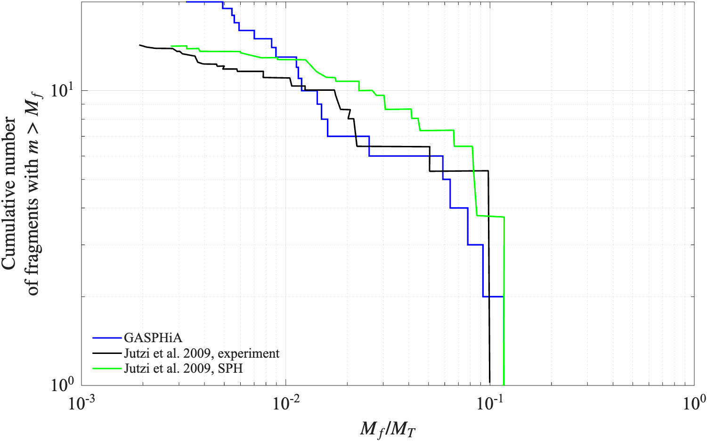

GASPHiA 实现了以下两篇论文描述的 P-alpha 模型：
- Numerical simulations of impacts involving porous bodies I. Implementing sub-resolution porosity in a 3D SPH hydrocode
- Numerical simulations of impacts involving porous bodies: II. Comparison with laboratory experiments
下面就实现过程遇到的问题做一个笔记。
---
1. 物理问题定义：P-alpha 模型
在多孔材料（如rubble pile、浮石）的冲击动力学中，宏观压力 $P$ 与固相压力 $P_{\text{eos}}$ 以及孔隙度 $\alpha$（也称膨胀度）满足关系：
$$P = \frac{P_{\text{eos}}(\rho_s, e)}{\alpha}$$
其中 $\rho_s = \alpha \rho$ 是固相密度，$\rho$ 是宏观密度，$e$ 是内能。
> 注意：$\alpha$ 必须大于 1，等于 1 代表这个粒子代表的空间没有空隙。
---
压实曲线 (Compaction Curve)
材料的压缩过程遵循压实曲线 $\alpha_{\text{curve}}(P)$，定义如下：
| 阶段 | 压力范围 | 公式 |
|---|---|---|
| 弹性阶段 | $P \le P_e$ | $\alpha = \alpha_0$ |
| 塑性压溃阶段 | $P_e < P < P_s$ | $\displaystyle \alpha = 1.0 + (\alpha_0 - 1.0) \left( \frac{P_s - P}{P_s - P_e} \right)^2$ |
| 完全压实阶段 | $P \ge P_s$ | $\alpha = 1.0$ |
> 另外需要注意，孔隙压实是塑性不可逆的。若当前压力导致的理论 $\alpha$ 大于历史最小孔隙度 $\alpha_{\text{old}}$，则取 $\alpha = \alpha_{\text{old}}$。
---
2. 非线性方程
我们需要寻找一个 $\alpha$，使得它既满足状态方程（EOS）产生的压力，又落在压实曲线上。定义目标函数：
$$F(\alpha) = \alpha - \min\left( \alpha_{\text{curve}}\left( \frac{P_{\text{eos}}(\alpha \rho, e)}{\alpha} \right), \alpha_{\text{old}} \right) = 0$$
> 式中，$\alpha_{\text{curve}}$ 指的就是压实曲线。
---
3. 二分法 (Bisection Method)
最简单直观想到的方案就是二分，只是二分法的运行时间可能会稍长一点。
3.1 迭代次数分析
假设对于一个高孔隙材料，初始孔隙度 $\alpha = 4$，对应的物理孔隙率为 $\phi = 1 - 1/\alpha$，即 75%。如果要求迭代最后的收敛精度：
$$\alpha_{n+1} - \alpha_n < \text{tol} = 10^{-12}$$
那么最坏的情况下需要迭代：
$$n \ge \log_2 \left( \frac{L_0}{\text{tol}} \right) = \log_2 \left( \frac{4-1}{10^{-12}} \right)=42$$
3.2 精度要求
值得注意的是：EOS 对密度极度敏感，实际测试过 tol 必须小于 1e-7，这样损伤场才不会产生虚假震荡。这对单精度计算来说是很难达到的，因此GASPH iA的孔隙度模型强制运行在双精度上，但是写回的时候会进行精度调整，适配整体的计算流程。
3.3 性能测试结果
$ grep "calPressureSoundSpeed execution time:" run.log | tail -n 20
calPressureSoundSpeed execution time: 2.882 ms
calPressureSoundSpeed execution time: 2.807 ms
calPressureSoundSpeed execution time: 2.775 ms
calPressureSoundSpeed execution time: 2.766 ms
calPressureSoundSpeed execution time: 2.822 ms
calPressureSoundSpeed execution time: 2.873 ms
calPressureSoundSpeed execution time: 2.766 ms
calPressureSoundSpeed execution time: 2.765 ms
calPressureSoundSpeed execution time: 2.753 ms
calPressureSoundSpeed execution time: 2.774 ms
calPressureSoundSpeed execution time: 2.776 ms
calPressureSoundSpeed execution time: 2.756 ms
calPressureSoundSpeed execution time: 3.197 ms
calPressureSoundSpeed execution time: 2.786 ms
calPressureSoundSpeed execution time: 2.854 ms
calPressureSoundSpeed execution time: 2.885 ms
calPressureSoundSpeed execution time: 2.816 ms
calPressureSoundSpeed execution time: 2.799 ms
calPressureSoundSpeed execution time: 2.787 ms
calPressureSoundSpeed execution time: 2.891 ms
...
$ tail -n 10 run.log
└─ Sub2: 0.050 ms ( 2.3%)
calPressureSoundSpeed execution time: 2.891 ms
[Step 2273] t=3.200656e-05 | dt=1.761e-08 | Tree=5.467 ms (B: 0.536, S: 4.931, G: 0.000) | Step=15.816 ms | Outputs=7 |
[computeRHS] Total: 2.263 ms
├─ Corr: 0.956 ms (42.3%)
├─ Sub1: 1.256 ms (55.5%)
└─ Sub2: 0.050 ms ( 2.2%)
[computeRHS] Total: 2.227 ms
> 二分法求解 EOS 的运行时间是不可接受的，已经要和计算右端项（单精度）的时间持平了，我们需要收敛更快的算法。
---
4. 牛顿-拉夫逊法 (Newton-Raphson)
牛顿-拉夫逊法是一种高效的非线性方程求根近似算法。对于一般方程 $f(x) = 0$，假设已知其近似根 $x_n$ 且导数 $f'(x_n) \neq 0$，该方法通过在 $(x_n, f(x_n))$ 处作曲线的切线，用切线与 x 轴的交点作为下一个近似根。其标准的迭代格式为：
$$x_{n+1} = x_n - \frac{f(x_n)}{f'(x_n)}$$
牛顿法在根的附近具有二阶收敛的优良特性，即每次迭代的有效数字大约会翻倍，收敛速度远快于二分法。
回到我们的孔隙度模型中，我们要求解的目标方程是 $F(\alpha) = 0$，因此对应的牛顿迭代格式即为：
$$\alpha_{k+1} = \alpha_k - \frac{F(\alpha_k)}{F'(\alpha_k)}$$
为了实现这一迭代过程，核心在于计算目标方程对孔隙度的非线性导数 $F'(\alpha) = \frac{dF}{d\alpha}$。利用链式法则将其展开：
$$\frac{dF}{d\alpha} = 1 - \frac{d\alpha_{\text{curve}}}{dP} \cdot \frac{dP}{d\alpha}$$
---
4.1 压实曲线导数 $\displaystyle \frac{d\alpha_{\text{curve}}}{dP}$
| 阶段 | 导数 |
|---|---|
| 弹性或完全压实阶段，或处于卸载状态（$\alpha_{\text{curve}} > \alpha_{\text{old}}$） | $\displaystyle \frac{d\alpha_{\text{curve}}}{dP} = 0$ |
| 塑性压溃阶段且处于加载状态时 | $\displaystyle \frac{d\alpha_{\text{curve}}}{dP} = -2 \frac{(\alpha_0 - 1.0)(P_s - P)}{(P_s - P_e)^2}$ |
---
4.2 压力对孔隙度导数 $\displaystyle \frac{dP}{d\alpha}$
已知 $P = \frac{P_{\text{eos}}(\alpha \rho, e)}{\alpha}$，对 $\alpha$ 求导：
$$\frac{dP}{d\alpha} = \frac{\alpha \cdot \frac{d P_{\text{eos}}}{d\alpha} - P_{\text{eos}}}{\alpha^2}$$
根据链式法则，$\frac{d P_{\text{eos}}}{d\alpha} = \frac{\partial P_{\text{eos}}}{\partial \rho_s} \cdot \frac{d \rho_s}{d\alpha} = \frac{\partial P_{\text{eos}}}{\partial \rho_s} \cdot \rho$。
定义 $\frac{\partial P_{\text{eos}}}{\partial \rho_s}$ 为 dpdrho（由 Tillotson EOS 直接提供），则：
$$\frac{dP}{d\alpha} = \frac{\text{dpdrho} \cdot \rho}{\alpha} - \frac{P}{\alpha}$$
---
5. 遇到的挑战：震荡
在撞击瞬间，粒子可能处于物理分界线（如弹性极限 $P_e$）附近。
5.1 问题描述
- 加载步：压力大 $\to$ 导数大 $\to$ 牛顿步过大 $\to$ 跨过分界线进入卸载区。
- 卸载步：进入卸载区 $\to$ 导数突变为 $0$ $\to$ 修正步直接弹回加载区。
> 这种由于导数不连续导致的变化造成了牛顿法在两个点之间无限循环，无法收敛。

图中展示的就是模拟初期，某些粒子受到一点点压力之后，牛顿迭代一直震荡无法收敛的情况。
---
6. 解决方案：安全牛顿法
为了兼顾牛顿法的速度与二分法的稳定性，引入了动态区间收缩的混合算法。
6.1 算法逻辑
| 步骤 | 操作 |
|---|---|
| 1 | 维护区间：初始化安全区间 $[a, b] = [1.0, \alpha_{\text{old}}]$ |
| 2 | 区间收紧：若 $F(\alpha_k) > 0$，则令 $b = \alpha_k$；若 $F(\alpha_k) < 0$，则令 $a = \alpha_k$ |
| 3 | 决策拦截：计算牛顿步 $\alpha_{\text{new}} = \alpha_k - \frac{F(\alpha_k)}{F'(\alpha_k)}$，若 $\alpha_{\text{new}}$ 落在开区间 $(a, b)$ 之外，说明牛顿法失效 |
| 4 | 降级处理：此时强行执行二分法 $\alpha_{\text{new}} = \frac{a + b}{2}$ |
| 5 | 保底策略：要是牛顿法在规定的迭代步中没有找到解，那么求解器会调用二分法求解 |

> 在相同的初始条件下，相比于震荡情况，现在求解器可以准确跳出震荡区间找到解了。
6.2 性能对比
效率方面比二分法的 2.8ms 左右，快了十倍。相较于求解 SPH 右端项函数的运行时间 2.4ms 左右，EOS 只需要花费其十分之一。
$ grep "calPressureSoundSpeed" run.log | tail -n 20
calPressureSoundSpeed_newton execution time: 0.237 ms
calPressureSoundSpeed_newton execution time: 0.237 ms
calPressureSoundSpeed_newton execution time: 0.236 ms
calPressureSoundSpeed_newton execution time: 0.236 ms
calPressureSoundSpeed_newton execution time: 0.228 ms
calPressureSoundSpeed_newton execution time: 0.237 ms
calPressureSoundSpeed_newton execution time: 0.242 ms
calPressureSoundSpeed_newton execution time: 0.234 ms
calPressureSoundSpeed_newton execution time: 0.240 ms
calPressureSoundSpeed_newton execution time: 0.231 ms
calPressureSoundSpeed_newton execution time: 0.234 ms
calPressureSoundSpeed_newton execution time: 0.234 ms
calPressureSoundSpeed_newton execution time: 0.233 ms
calPressureSoundSpeed_newton execution time: 0.238 ms
calPressureSoundSpeed_newton execution time: 0.229 ms
calPressureSoundSpeed_newton execution time: 0.236 ms
calPressureSoundSpeed_newton execution time: 0.238 ms
calPressureSoundSpeed_newton execution time: 0.236 ms
calPressureSoundSpeed_newton execution time: 0.239 ms
calPressureSoundSpeed_newton execution time: 0.231 ms
...
$ tail -n 10 run.log
└─ Sub2: 0.050 ms ( 2.3%)
[computeRHS] Total: 2.420 ms
├─ Press: 0.000 ms ( 0.0%)
├─ Corr: 1.026 ms (42.4%)
├─ Sub1: 1.352 ms (55.9%)
└─ Sub2: 0.042 ms ( 1.7%)
calPressureSoundSpeed_newton execution time: 0.207 ms
---
7. 最终成果与物理验证
7.1 压实曲线验证

图中红色虚线为理论压实曲线，散点为 GASPHiA 的模拟输出。随时间推进，压力导致孔隙正确压实；在压力卸载后，孔隙度严格保持不变，未出现非物理的回弹现象。这从底层印证了 P-alpha 模型的不可逆逻辑实现完全准确。
---
7.2 宏观实验对比

- 图 a, b：Jutzi et al. 2009 论文中的实验结果和基准模拟结果。
- 图 c：GASPHiA 的模拟结果。
> 可以看到，GASPHiA 输出的物理形态与原始实验及基准论文高度吻合。

对撞击结果进行后处理分析，提取碎片累积质量分布数据：
> GASPHiA 计算得到的最大残余碎片质量占比为 11.67%，与实验室给出的真实实验数据 9.96% 误差很小，进一步验证了整个多孔材料求解器核心计算逻辑的可靠性。